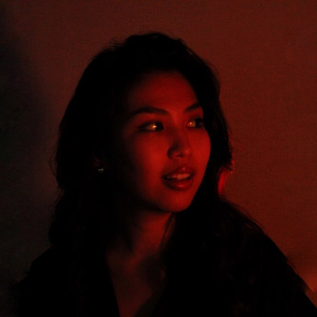

🗣️
Логопедическая диагностика
Выявляю особенности речевого развития и составляю индивидуальный план работы.
Нургалиева Дильназ Маратовна
Логопед — дефектологЛогопед
Индивидуально подбираю программу занятий с учётом возраста, особенностей речевого развития и запроса родителей. Работаю с детьми так, чтобы процесс был комфортным, понятным и результативным.

Обо мне
Я — Нургалиева Дильназ Маратовна, логопед с профессиональным образованием по специальности логопедия. В своей работе помогаю детям развивать речь, преодолевать трудности в звукопроизношении и улучшать коммуникативные навыки.
В работе использую индивидуальный подход и подбираю коррекционные упражнения в соответствии с особенностями и потребностями ребёнка. Стараюсь создать доброжелательную и безопасную атмосферу, чтобы родители были уверены в результате, а ребёнок чувствовал себя спокойно и мотивированно на занятиях.
Казанский федеральный университет — специальное (дефектологическое) образование, профиль: логопедия.
2 года практической работы с детьми. Подбираю упражнения с учетом потребностей каждого ребенка.
Услуги
8 индивидуальных занятий по 40 минут
Индивидуальное занятие, 40 минут
Продолжительность — 60 минут
Выявляю особенности речевого развития и составляю индивидуальный план работы.
Корректирую нарушения звукопроизношения и помогаю сделать речь более четкой.
Развиваю словарь, грамматические навыки и правильное построение речи.
Формирую умение грамотно выстраивать предложения и выражать мысли последовательно.
Помогаю активизировать речевую деятельность и развивать коммуникативные навыки.
Использую специальные приемы для развития артикуляционной моторики и коррекции нарушений.
Как проходит консультация
Вы оставляете заявку, и мы обсуждаем цель занятий, возраст ребёнка и особенности развития.
Проводится оценка речевого развития и выявляются зоны, требующие внимания и коррекции.
Составляется индивидуальная программа с учётом возраста, задач и темпа развития ребёнка.
Мы закрепляем навык, отслеживаем прогресс и помогаем ребёнку говорить увереннее и чётче.
Отзывы
«Занимаемся у Дильназ Маратовны примерно пол года, логопед она просто хороший, с ребёнком достаточно быстро нашла контакт и общие интересы, сейчас на занятиях занимается с любопытством и полностью доверяет ей сын❤️ За пол года есть очень хороший результат в разговорной речи 🙏❤️ Мы любим Дильназ Маратовну❤️»
«Дорогая наша Дильназ Маратовна, спасибо Вам большое за вашу доброту, за то, что нашли подход к нам и полюбили нас🥰 Спасибо Вам большое за большой вклад в развитие речи, многие замечают, что речь стала более чёткой и красивой🥰 Приезжайте к нам в гости 🥰 мы всегда будем Вам рады 🙏 🥰 Мы вас очень любим 🥰 Будьте счастливы, здоровы, успехов и удачи Вам желаем на вашем новом месте 🙏 🥰 Вы самая лучшая и логопед невероятно замечательный ❤️❤️❤️ Мы по Вам уже очень сильно скучаем 🥺»
«Ходим на занятия к логопеду к Дильназ Маратовне, невероятно классный логопед, с первой минуты расположила к себе как родителей так и ребёнка! ❤️ с ребёнком занимаются в очень интересной форме, сейчас сын каждый день спрашивает, когда мы поедем на занятие, после занятий обнимает её ❤️ старается выполнять все домашние задания с повторением ежедневно, каждый день дома показывает как проходят занятия у них❤️ Дильназ Маратовна, мы вас всем сердцем и душой очень любим! ❤️❤️❤️ Родители Тимоши❤️»
Ответы на вопросы
Занятия подходят детям с раннего возраста, а также подросткам и взрослым, которым важно улучшить речь и уверенность в общении.
Обычно одно занятие длится 40 минут, в зависимости от целей и возраста ребёнка.
Да, небольшие упражнения дома помогают закрепить результаты и ускоряют процесс улучшения речи.
Да, логопедическая диагностика проводится отдельно и позволяет определить индивидуальную программу занятий.